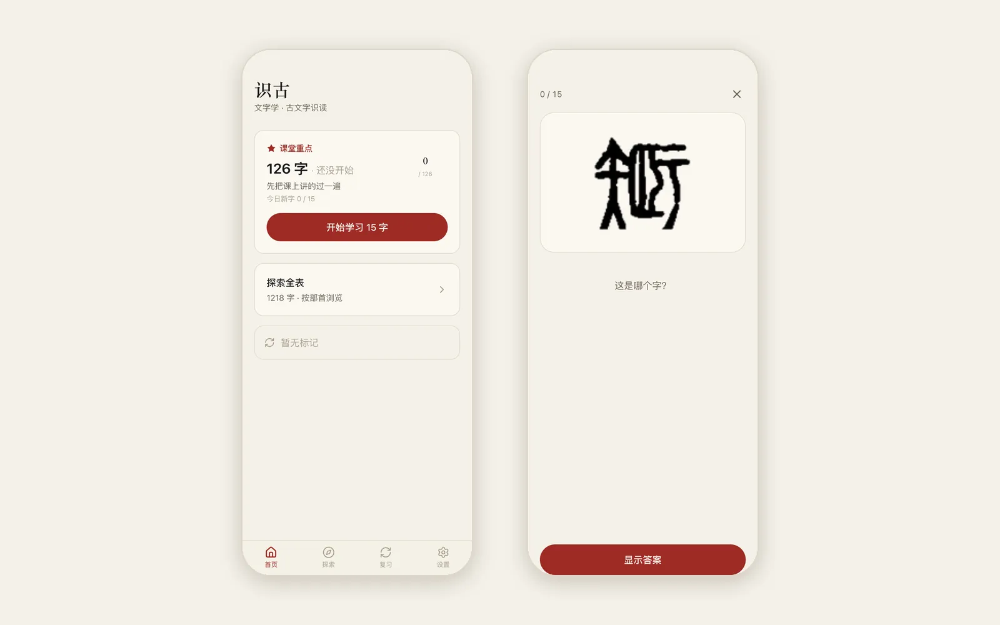

PROJECT NOTES / 2026.06
Shigu: Ancient Script Flashcards
An offline iPhone flashcard app for reading ancient Chinese script before the exam

Shigu started as exam prep. My Chinese philology course asked us to read ancient characters, from oracle bone and bronze inscriptions to seal script, and name the modern character each one became. I wanted to practice on my phone in spare minutes, even without a signal.
So the app does one thing: it shows an ancient glyph and asks which character it is. The 126 characters stressed in class come first, each with offline glyphs from up to four eras. Anything I miss goes into a review queue and keeps coming back within the round until I get it right, while Leitner-style spacing decides when each card returns.
When I want to go wider, the full table of 1,218 characters is there to browse by radical. It is a statically exported Next.js app with progress stored in IndexedDB. It installs on the iPhone home screen and makes no network requests once it has loaded.